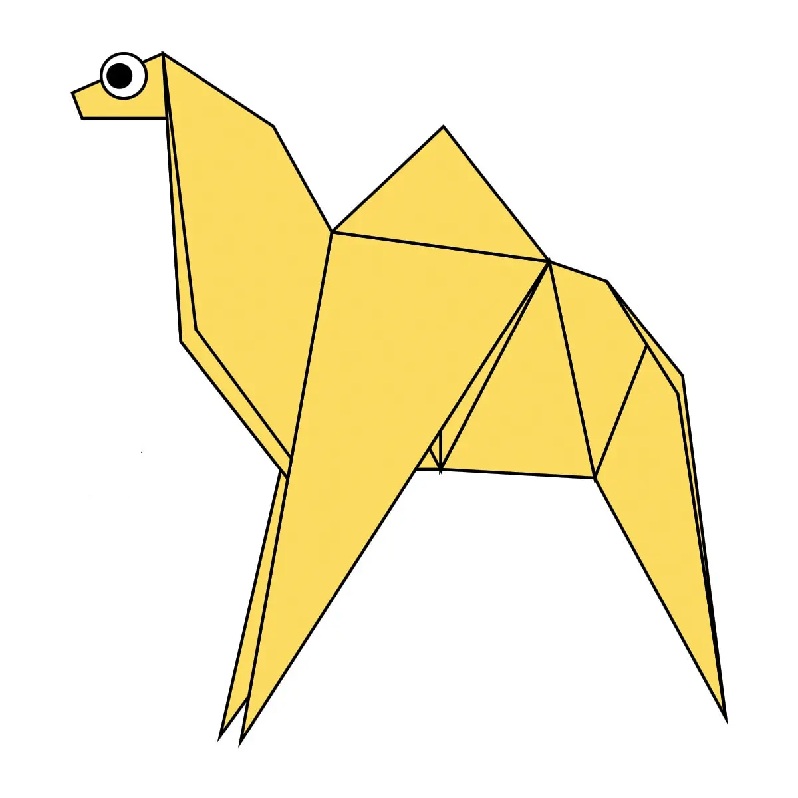
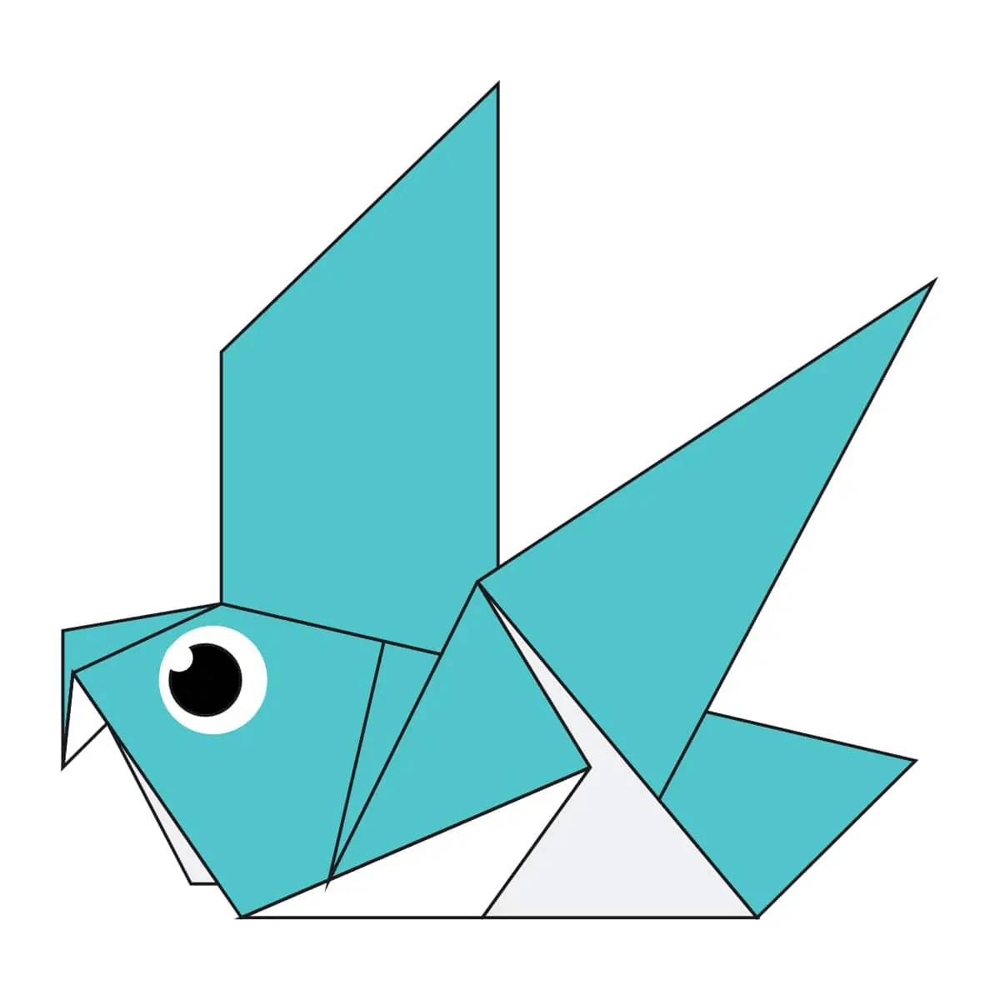
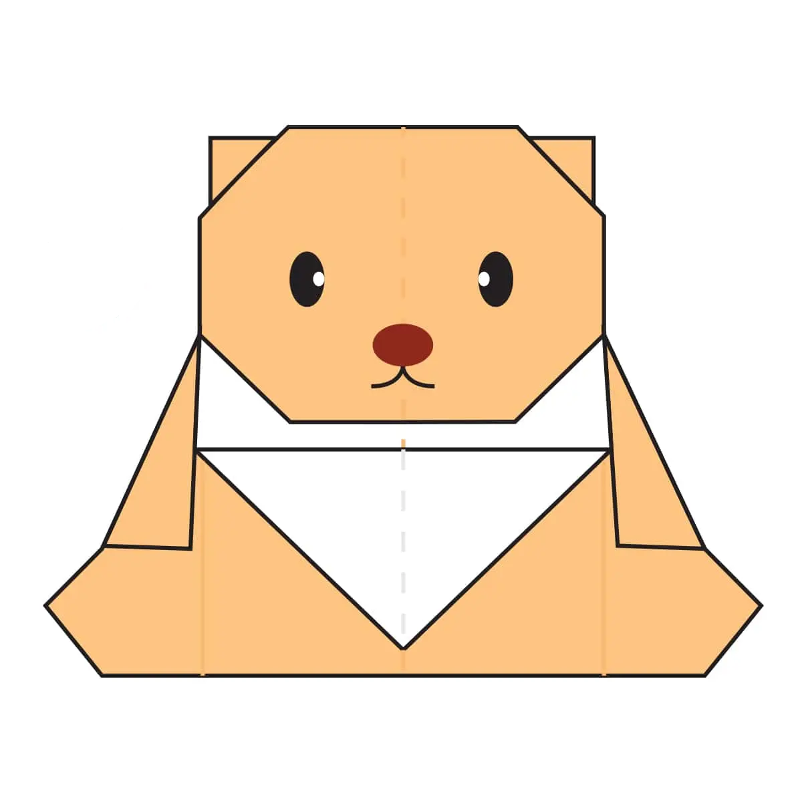
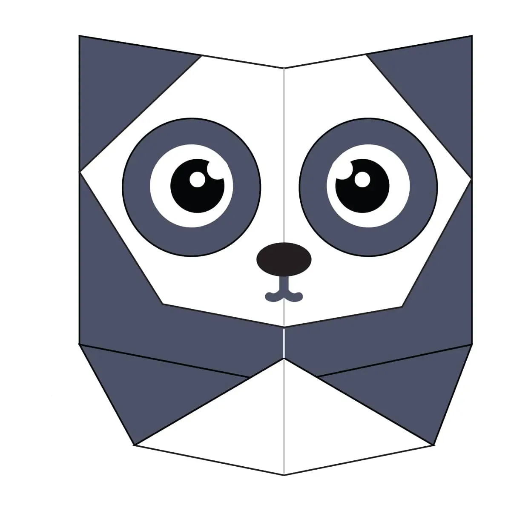

Origami Designs
-Simple Crafts-
About Us
Follow Us

Interesting Facts about Camels:
- Camels have three sets of eyelids and two rows of eyelashes to keep sand out of their eyes.
- When they finally do find water, they can drink up to 40 gallons in one go.
- Don’t make a camel angry – they can spit as a way to distract whatever they think is a threat.

Interesting Facts abbout Chameleons:
- Chameleons mainly cahnge color in order to communicate or regulate body temperature.
- Most chameleons have a prehensile tail that they use to wrap around tree branches.
- Their eyes can swivel around in 2 different directions simultaneously.

Interesting Facts about Pigeons:
- Pigeons are incredibly complex and intelligent animals.
- They are renowned for their outstanding navigational abilties.
- Pigeons have execellent hearing abilties.

Interesting Facts about Bears:
- Bears are extraordinary intelligent animals.
- They have execellent sense of smell, sight and hearing.
- They care deeply about family members

Interesting Facts about Pandas:
- Pandas are good at climbing trees and can also swim
- Pandas go from pink to white and black (or brown).
- Pandas have carnivorous teeth, but they eat bamboo and fruit.

Interesting Facts about Flying Cicadas:
- Most Cicadas have red-orange eyes, but occasionally they have blue, white or grayish eyes.
- They improve lawns by digging tunnels that allow air into the soil.
- Some cicada calls can be heard up to 1 mile (1.5 kilometer) away.